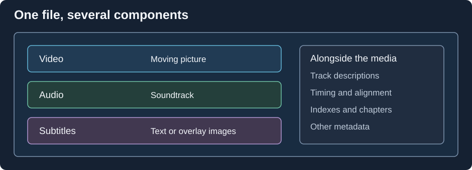

What Is a Media File?
Press Play on a film and several things begin together: the first picture appears, sound starts, and subtitles arrive at their appointed moments. A media file stores the material for those events and enough information to organize them.

An illustrative collection of components, rather than a byte map of a particular format.
Follow one moment in that film. The file reader locates some encoded video data, identifies its codec, and passes it to a decoder. The decoder reconstructs a picture. Separately, an audio decoder produces samples for the same part of the soundtrack. Timestamps tell the playback system when to present each result. Reading bytes, reconstructing media, and scheduling playback are different jobs.
The container supplies the organization around the encoded content. It can describe several tracks, so choosing a commentary soundtrack changes the audio sequence without duplicating the picture. A subtitle track supplies timed text or images; chapter information supplies named positions within the presentation.
Information for playing and information about the film
Consider an item in an Emby library titled Example Film. A poster and a plot summary help you choose it. A video resolution of 1920 × 1080, an English audio tag, and a duration of 01:42:00 help software handle the source. These descriptions answer different questions.
| Information | Describes | Where it can come from |
|---|---|---|
| Encoded picture and sound | The recorded media | The file's payload |
| Codec, timing, and track properties | How to reproduce it | Headers, container structures, or examination of the data |
| Film title, cast, and synopsis | The work represented by the file | Embedded tags, local metadata, or a library provider |
A library can identify the work correctly while the file's audio language is missing. Conversely, a technically readable file can have no useful film title at all. This is why media probing and library identification are separate operations.
A file also separates stored order from viewing order. It may alternate chunks of audio and video rather than keep one uninterrupted run of each. The reader extracts those pieces and their timing; the player assembles the experience. When you inspect a file, its track list and timestamps reveal more of that organization than its filename does.